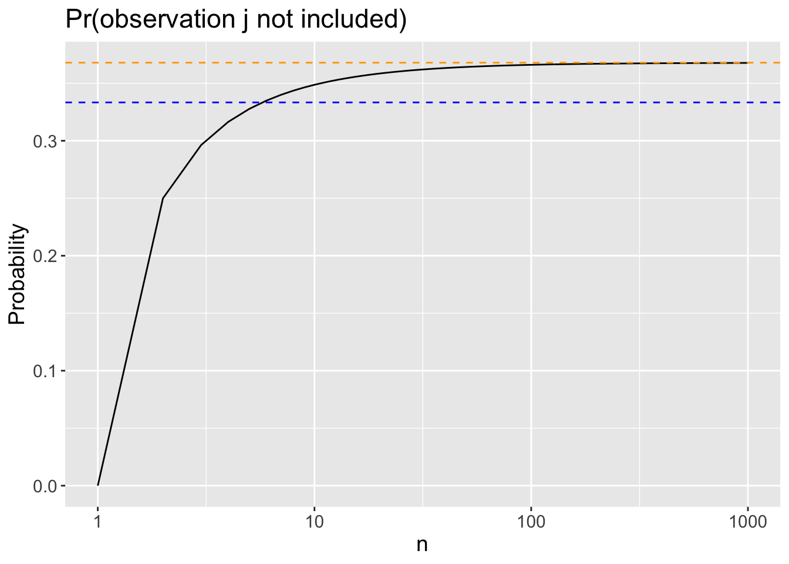

Bootstrap
Implementations
Introduction
We will now derive the probability that a given observation is part of a bootstrap sample. Suppose that our original sample contains \(n\) observations, and wish to obtain a bootstrap sample. Remember that in bootstrap sampling we repeatedly sample/draw with replacement from the original sample until we have a bootstrap sample of size \(n\). As a result, each draw is assumed independent of the next.
Note: if two events \(A\) and \(B\) are independent of each other, then the probability of both events happening is the product of their individual probabilities occurring:
\[\text{Pr}(A \text{ and } B) = \text{Pr}(A) \times \text{Pr}(B)\]
Part 1: “Theory”
Suppose we wish to obtain our first bootstrap sample (which will ultimately be of size \(n\)). Answer the following questions using text (no code necessary, unless using R as a calculator).
What is the probability that the first bootstrap observation in this sample is not the \(j\)-th observation from the original sample? Justify your answer.
What is the probability that the second bootstrap observation is not the \(j\)-th observation from the original sample?
Argue that the probability that the \(j\)-th observation is not in the bootstrap sample is \((1-1/n)^{n}\).
When \(n = 5\), what is the probability that the \(j\)-th observation is in the bootstrap sample?
When \(n = 100\), what is the probability that the \(j\)-th observation is in the bootstrap sample? Comment on how this relates to the probability you found when \(n = 5\).
When \(n = 1000\), what is the probability that the \(j\)-th observation is in the bootstrap sample? Comment on how this relates to the probability you found when \(n = 100\).
The following plot displays, for each integer value of \(n\) from 1 to 1000, the probability that the \(j\)-th observation is not included in the bootstrap sample. The orange dashed line is at \(y= e^{-1} = 1/e\), and the blue dashed line is at \(y = 1/3\). Note that the x-axis is on the log scale.
Comment on what you observe.
Part 2: Simulation
We will now investigate numerically the probability that a bootstrap sample of size \(n = 100\) contains the \(j\)-th observation.
You will obtain a total of \(B = 10000\) bootstrap samples. For each bootstrap sample \(b\), you should record a:
1 if the fourth observation (i.e. \(j = 4\)) is not contained in the bootstrap sample
0 if the fourth observation is contained in the bootstrap sample
Note: the actual data does not matter in this simulation. We only care about which observations are selected, not the values of the observations themselves.
Then, take the mean of your \(B\) results. How does your empirical probability (i.e. simulated result) compared to the theory above?